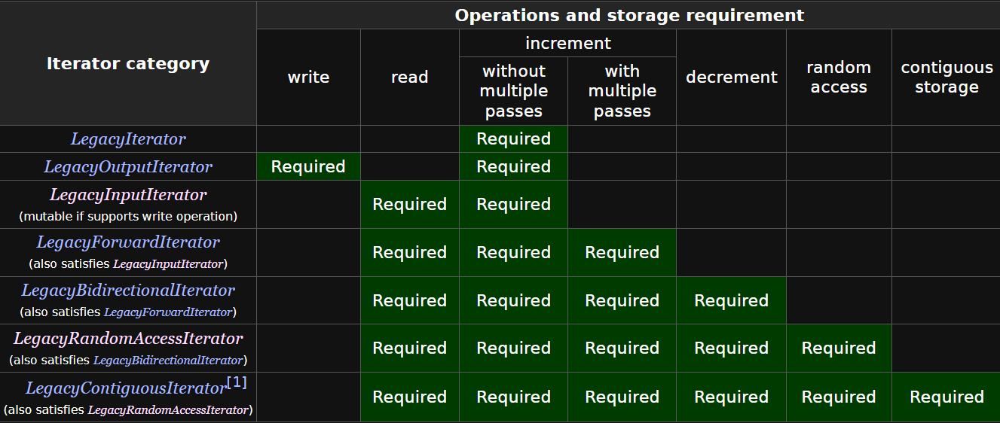

Iterátorok
Az iterátor egy olyan típus, amely általános (generikus) módon képes iterálni egy tárolón. Az iterátorok okos pointerek, segítségükkel ugyanazzal az interfésszel iterálhatunk különböző konténereket.
Iterátorok legfontosabb műveletei:
- éppen akt. elem elérése:
operator*(),operator->() - következő elemre lépés:
operator++(),operator++(int) - iterátorok (mutatók) összehasonlítása:
operator==(),operator!=() - Kollekció művelete: mutatóobjektum létrehozása az első elemre:
begin()tagfüggvény - Kollekció művelete: mutatóobj. létrehozása az utolsó utáni elemre:
end()tagfüggvény
Most elengedjük egy kicsit a tömböket, és megnézünk egy láncolt lisát.
template <typename T>
class List{
struct node{ //belső osztály, List<T>::node
T data;
node* next;
};
node* m_head;
std::size_t m_size;
public:
List() : m_head{nullptr}, m_size(0) {}
List(const List& other) : m_head(nullptr), m_size(0) {
for(const auto& elem : other) {
push_back(elem);
}
}
~List() {
//...
}
void push_front(const T& data) {
//...
}
void push_back(const T& data) {
//...
}
std::size_t size() const {
return m_size;
}
};
Ha ezen a listán végig szeretnénk iterálni, akkor az valamilyen ronda ->next és ==nullptr -el teli kódot eredményezne.
Ehelyett készíthetünk egy iterátor (belső) osztályt, amely az iterálás lépéseit absztraktálja el. Ahhoz, hogy egy iterátor használható legyen legalább szükség van valamilyen léptető operátorra, valamint összehasonlító(== != stb.) operátorokra is.
Pl.:
template <typename T>
class List{
struct node{
T data;
node* next;
};
public:
struct iterator{
friend class List;
private:
node* it; //az iterátor egy pointer absztrakció, azt tárolja hogy éppen melyik node-ra mutat
explicit iterator(node* it) : it(it) {} //privát konstruktor, nem kell hogy a hívó fél manuálisan csináljon iterátorokat
public:
iterator(const iterator& other) : it(other.it) {}
iterator& operator= (const iterator& other) {
it = other.it;
return *this;
}
/**
* @brief léptető preincrement operátor, a current = current->next műveletet absztraktálja
* @return
*/
iterator& operator++() {
it = it->next;
return *this;
}
/**
* @brief összehasonlító operátor FONTOS!
* @param other
* @return
*/
bool operator==(const iterator& other) const {
return it == other.it;
}
/**
* @brief összehasonlító operátor FONTOS(talán a legfontosabb)
* @param other
* @return
*/
bool operator!=(const iterator& other) const {
return !(it == other.it);
}
/**
* @brief dereferencia operátor
* @return
*/
T& operator*() {
return it->data;
}
/**
* @brief nyíl operátor ha az iterátoron keresztül közvetlen egy osztály tagjait akarjuk elérni
* @return
*/
T* operator->() {
return &(it->data);
}
};
};
Természetesen kellenek tagfüggvények, amelyek ennek a listának az iterátorait adják vissza:
begin() : A tároló elejére mutató iterátort ad vissza.
end() : A tároló vége utáni("utolsó valid elem utáni") iterátort ad vissza, "szentinel" iterátort. Ez egy lista esetében pl. nullptr -re mutató iterátor.
Ez a begin-end interfész a C++ nyelv tárolói közt egységes, és később látjuk is, hogy van egy fontos nyelvi elem is, ami erre támaszkodik, ezért ezt érdemes követni.
//List class-on belül, de nem az iterator-ban
public:
/**
* @brief begin tagfüggvény az iteráláshoz
* @return az első elemre mutató iterátor
*/
iterator begin() {
return iterator(m_head);
}
/**
* @brief end tagfüggvény az iteráláshoz
* @return az utolsó érvényes elem "után" mutató iterátor, "sentinel" iterátor, mindig null-ra mutat
* ebben a lista implementációban
*/
iterator end() {
return iterator(nullptr);
}
Iterátorok használata:
int main(){
List<int> list;
for(int i = -3; i < 5; ++i){
list.push_back(i);
}
for(List<int>::iterator it = list.begin(); it != list.end(); ++it) {
std::cout << *it << ' ';
}
std::cout << '\n';
*list.begin() = 5;
}
Megjegyzés: Az iterátorok típusai nagyon hosszúak is lehetnek, ezért általában az auto kulcsszót szokás használni. Ez fordításidőben levezeti és behelyettesíti a helyes típust ahol lehet. Pl.
A fent látott
kódrészlet olyan gyakori, hogy külön szintaxis létezik rá:for(const int& elem : list) { //ua. mint az előbb, csak konstans referenciával
std::cout << elem << ' ';
}
Note
List<int>::iterator helyett gyakorlatban sokszor helyett auto -t használunk:
Iterátorok konstans tárolókhoz
Konstans tárolókhoz szükség van egy új osztályra, ami konstans mutatóként működik.
Note
Ehhez nem elég annyi, hogy a const iterator -t használunk!
Nem az iterátor konstans, hanem a mögötte lévő tároló.
A konstans iterátor konstans elemre mutat, rajta keresztül nem változtatható meg az elem.
struct const_iterator{
friend class List;
private:
const node* it;
explicit const_iterator(node* it) : it(it) {}
public:
const_iterator(const const_iterator& other) : it(other.it) {}
const_iterator(const iterator& other) : it(other.it) {} // iterátorból lehet const_iterátort
const_iterator& operator=(const const_iterator& other) {
it = other.it;
return *this;
}
const_iterator& operator++() {
it = it->next;
return *this;
}
bool operator==(const const_iterator& other) const {
return it == other.it;
}
bool operator!=(const const_iterator& other) const {
return !(it == other.it);
}
const T& operator*() const {
return it->data;
}
const T* operator->() const {
return &(it->data);
}
};
A listában pedig készítünk `const` overloadot a `begin()` és `end()` tagfüggvényekre, valamint csinálunk új `cbegin()` és `cend()` függvényeket:
```cpp
const_iterator begin() const {
return const_iterator(head);
}
const_iterator end() const {
return const_iterator(nullptr);
}
const_iterator cbegin() const {
return begin(); //mivel cbegin() const, a begin() tagfgv. const változata választódik ki
}
const_iterator cend() const {
return end();
}
Iterátorok, tömbök és pointerek
Egy tömb egy elemére mutató pointer kielégíti az iterátorok legmélyebb követelményét, a LegacyContiguousIterator követelményt.
Ha belegondolunk, a pointereken működnek a +, +=, ++, ==, !=, stb. operátorok, valamint ezek valóban a tároló elemei közti lépéseket valósítják meg.
Ez azt jelenti, hogy egy dinamikus tömbnél például nincs szükség külön iterátor osztályra, hiszen elég a pointereket léptetni és összehasonlítani.
Ez azt jelenti, hogy egy dinamikus tömböt elég ennyivel kiegészíteni:
T* begin() {
return tomb;
}
const T* begin() const { // const T* konstans elemre mutat tehát const_iterator sem kell
return tomb;
}
T* end() {
return tomb + meret;
}
const T* end() const {
return tomb + meret;
}
Kiegészítés: Iterátorok besorolása
Az iterátorokat besorolhatjuk az alapján, hogy mire képesek. Ezeket a csoportokat nem kell tudni, csak érdekességképp szerepelnek a jegyzetben:
